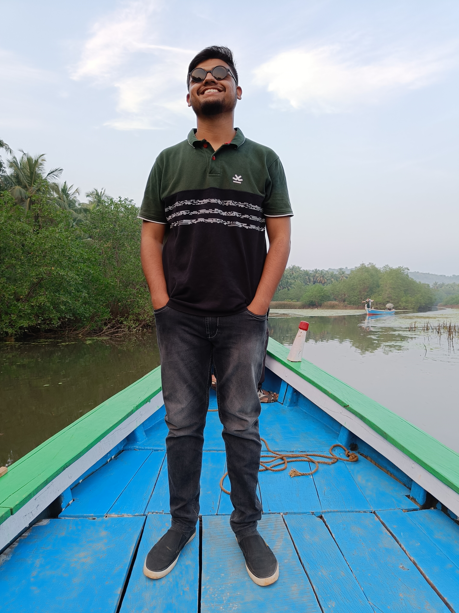

About Me
Hey Guys!,I am Srirang Jahagirdar.I am 21 years old.I am from Kalaburagi,Karnataka,India.I am currently pursuing Electronics and Communication engineering from KLE Technological University.I like to travel,I like listening to music. I love Marvel Movies and series. I am a gamer,FIFA is my favorite game.
My Skills
Design and Development
I started learning Front End Web development at 21 as I wanted this to my Skills and even work as a web developer.I have gained a basic knowledge of HTML and CSS.
C Programming
C programming is one of the basic languages before learning any other higher level languages.C programming is a general-purpose, procedural, imperative computer programming language developed in 1972 by Dennis M. Ritchie at the Bell Telephone Laboratories to develop the UNIX operating system.

C++ Programming
C++ is a general-purpose programming language created by Bjarne Stroustrup as an extension of the C programming language, or "C with Classes".C++ is used mainly because of its object oriented programming property, to use properties like inheritance,polimorphism etc.